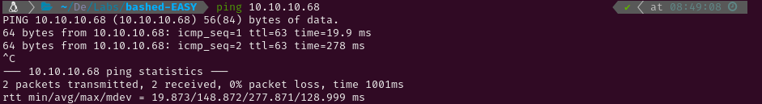

EASY - BASHED
1. Recon
Nmap
To determine the target's operating system, I initiated a ping test. The Time-To-Live (TTL) value returned
was 63, indicating it was a Linux system (TTL values around 128 typically suggest a Windows OS). Following
this, I conducted an Nmap scan to identify active services on the target using the -p- flag to
scan all ports. Since this is a Hack The Box machine, I optimized the scan for speed with the following
flags:
-min-rate 5000sS(SYN scan)T5(maximum speed)


The scan revealed the following open ports:
- HTTP on port 80
Next, I performed a more detailed scan on port 80 with service version detection (-sV) and used
the Nmap Scripting Engine (NSE) with default scripts (-sC). I saved the output for reference
using the -oN flag.

Website - TCP 80
After scanning for services, I utilized whatweb to identify the technologies used by the HTTP
service. The web interface resembled a blog and displayed a tool called phpbash, which
appeared to function as a web shell allowing command execution. There was an image where a directory path
could be seen (/uploads/phpbash.php), but it was empty when accessed.
Subsequently, I executed the following command to enumerate directories on the web server:
gobuster dir -u [http://10.10.10.68](http://10.10.10.68/) -w /usr/share/wordlists/dirb/common.txt -o results.txt -x html,php,py,conf,txt,log,xml,sh


This revealed several directories, all of which were empty or contained files that were not useful for
further access, except for the /dev/ directory which contained. I tested command execution and
confirmed it ran under the www-data user. I then attempted to send a TCP reverse shell to my
machine, which succeeded after URL encoding the & symbols (%26)

2. Gaining Access
I visited all of them and they all were empty or had files that I couldn’t use to gain access to the system.
All but the /dev/ directory, which had the already mentioned tool phpbash. I tried
writing commands and I found it ran them as the www-data user. So I tried sending a TCP
revershe shell to my own system which finally worked when I URL encoded the &’s (%26).


After gaining access to the system, I spawned a fully upgraded TTY to maintain the connection more effectively. This was accomplished using the following commands:
python
script /dev/null -c bash #Starts a new shell session without logging.
^Z #Pauses the new shell.
stty raw -echo;fg #Sets the terminal to raw mode, unsets echoing, and then brings the shell back.
reset #Resets the terminal to a sane state.
xterm #Sets the terminal type.
export TERM=xterm #Definition of necessary environment variables.
export SHELL=bash
stty rows 59 columns 116 #Definition of the window size.

With a stable TTY, I navigated to retrieve the user flag and then checked the sudo permissions. I discovered
that I could execute commands as the user scriptmanager, prompting me to start a shell as that
user.


3. Privilege Escalation
Root
After switching users, I downloaded pspy to monitor the running processes. After observing
for a while, I noted that the file test.py was executed periodically.


I located test.py by following its path to the /scripts/ directory. Upon listing
its contents, I found that the user scriptmanager owned test.py, which meant I
could modify its contents to execute arbitrary commands as the user running it (UID=0, root).


To exploit this, I edited test.py to change the permissions of /bin/bash when the
script was executed. This modification allowed me to run bash as its owner (root) after the
next execution of test.py.


Finally, I was able to access the root user and capture the root flag.